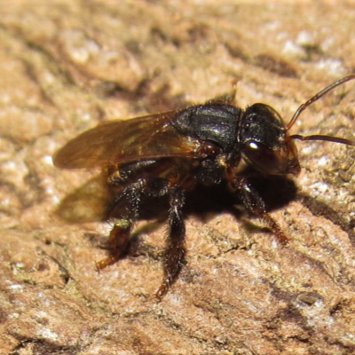
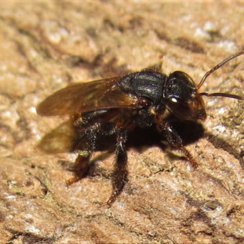

Características Gerais
A Mandaguari Preta é uma abelha sem ferrão com características únicas. Sua coloração escura e sua
capacidade de construir ninhos em diversos locais demonstram grande adaptabilidade. Com tempo de vidas
variadas, a rainha vivendo vários anos, os zangões, vivendo pouco, pois sua função é apenas fecundar a
rainha, e após isso, é normal serem expulsos da coméia, e por fim
as operárias, vivendo de 40 à 50 dias, sendo elas quem protegem, constroem, criam os ovos, larvas e
pupas e limpam a coméia
 Defesa robusta: Apesar de não ter ferrão, essa abelha possui uma defesa eficaz. A entrada do ninho é
protegida por própolis e, em caso de ameaça, as abelhas atacam em grupo usando mordidas como sua
ferramenta.
Defesa robusta: Apesar de não ter ferrão, essa abelha possui uma defesa eficaz. A entrada do ninho é
protegida por própolis e, em caso de ameaça, as abelhas atacam em grupo usando mordidas como sua
ferramenta.
 Importância ecológica: A Mandaguari Preta desempenha um papel crucial na polinização de diversas
plantas, contribuindo para a biodiversidade e a agricultura. Seu mel, embora em menor quantidade, é
valorizado por suas propriedades medicinais.
Importância ecológica: A Mandaguari Preta desempenha um papel crucial na polinização de diversas
plantas, contribuindo para a biodiversidade e a agricultura. Seu mel, embora em menor quantidade, é
valorizado por suas propriedades medicinais.
 
